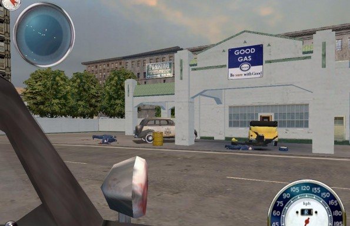

Istenkém, hát ha valaminek van hangulata, az bizony a Mafia. Itt nem csupán az átvezető videókról beszélek, hanem úgy egészében a városról (Lost Heaven), a karakterek szájmozgásáról, a szinkronhangokról, a kor stílusáról és annak kitűnő lemintázásáról, és még sorolhatnám napestig. Még életemben nem hallottam ilyen jó szinkronhangokat, és amikor Don Salieri kifújja a füstöt a szájából...áhh azt látni kell! Hihetetlen hogy a cseh srácok az ilyen apró kis mozzanatokra is ennyire ügyeltek! Lost Heaven pedig gyönyörűen lett lemásolva, én úgy tudnám jellemezni, mint több '30-as évekbeli város összemontírozása (New York, Chicago, stb.), melyeknek épületei kitűnően lettek lemásolva. És ez halál komoly, én nem nagyon találtam két egyforma házat, pedig itt bizony hatalmas térről van szó, hiszen Lost Heaven 10 városrészből áll, melyeknek mérete összesítve bizony tapsot érdemel. No persze ezekhez jön még a sok-sok fegyver (Thompson, Colt, Shotgun, baseballütő, stb.), és az annál is több autómodell, melyek gyönyörűen vannak lemintázva. Ezek a "csekély" dolgok, a missziók, az átvezetők és más nyalánkságok teszik együttesen naggyá a játékot, és így könnyen bele tudjuk élni magunkat Tommy szerepébe. A missziók bizony említést érdemelnek, hiszen itt korlátozva van a szabadságérzet bizonyos formája. Ezalatt azt értem, hogy nem GTA-szerű szabadon választott küldetések állnak a rendelkezésünkre, hanem egymás után érkező feladatok. Első hallásra talán ez megrémíti az embert, de higyjétek el, hogy egyáltalán nem olyan rémisztő. Mint már mondtam, a hangulata olyan fokon kárpótol minket, hogy nem is zavar minket ez a "kötelezettség". De kicsit lejjebb még teszek említést ezen korlátozások kárpótlásáról, illetve annak módjáról.
